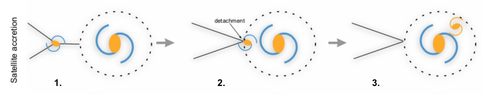
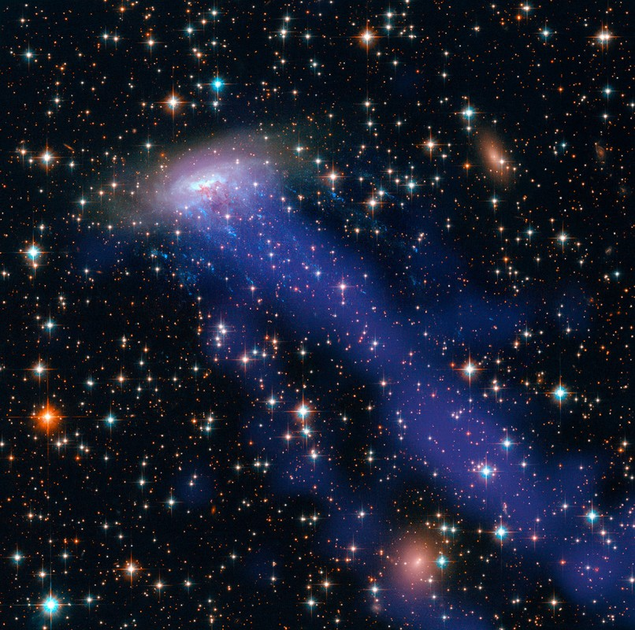

A more in-depth look at galaxy evolution
If the infographic was not enough and you would like a more advanced read, this is for you!
High density environment
What do we mean by "high density environment"? These regions of space are characterised by a high density of objects, as opposite to the voids defined by the large-scale web structure of the universe (see figure below).
 This is my caption
This is my caption- Galaxy clusters: The largest gravitationally bound structures of the universe. They contain thousands of galaxies and their masses are around 100000 billion solar masses. Virgo is the nearest galaxy cluster, located at 16.5 Mpc from us.
- Galaxy groups: Small aggregates of galaxies that contain up to 50 members. They have masses around 1000 billion solar masses. The Milky Way is located in a group of galaxies, the Local Group.
Quenching
A galaxy is defined as "quenched" when it has run out of all of the cold gas (temperature HERE) needed for gas formation. But how does this exactly happen?
Web detachment
One theory that has been brought forward is the "web detachment" model: once a galaxy falls into a high density environment its connection with the cosmic web filaments is severed. The filaments, made of gas and dark matter, were the galaxy's way to accrete new gas: once the connection is severed the galaxy will never accrete gas again.

Environmental Quenching
Once the galaxy has been disconnected by its gas supply, its pre-existing gas is stripped away by environmental mechanisms acting within the high density environment (and also consumed by bursts of star formation). These mechanisms can be divided in two categories:- Hydrodynamical mechanisms: Ram-pressure stripping, strangulation.
- Gravitational mechanisms: Harassment, tidal stripping.

Gravitational mechanisms are typically more effective than hydrodynamical mechanisms. They all have different radii of influence, but they are all effective in the innermost regions of the high density environment. We would then expect galaxies located in these inner regions to be subject to the combined effect of all mechanisms so they tend to be more gas-poor.
How do you calculate how long it takes for a galaxy to be stripped of all of its gas?
The focus of my research project is to build a statistical model that constrains the "quenching time": the time it takes for the environment to completely quench a galaxy and leave it "red and dead". This model, built using observational data and simulations, rests on the assumption that the quenching time entirely depends on:- The initial stellar mass of a galaxy (M*): we assume that the bigger the galaxy, the longer it will take for its gas to be completely stripped
- The time at which the galaxy and surrounding CDM fell into the massive CDM halo associated with the high density environment
- Observational data of the cluster or group of interest. The data must include mass info of galaxies AND star formation OR gas content OR photometry. One of these three is needed in order to deduce star formation.
- Dark matter simulation data from a suite that reproduces mass conditions of the observed environment. The data must include mass information and time of infall into environment for each satellite galaxy (and associated CDM halo). The higher the mass and temporal resolution the better.
- Using observational data classify the galaxies into a star-forming population or a quiescent population across all masses.
- Associated simulated infall times by matching the simulated and observed masses of the objects.
- Use the distribution of infall times of the star-forming and quiescent populations to calculate how long it took for the galaxies to be fully quenched.